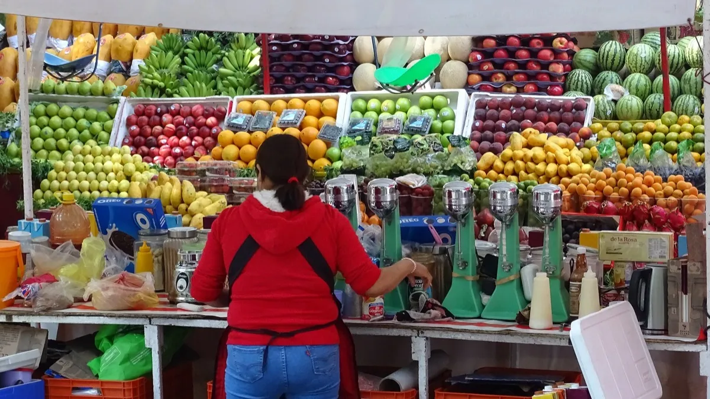

Estadísticas de reseñas en línea 2026: los datos que todo negocio en México debe conocer
Cuántas reseñas necesitas, qué calificación esperan los clientes, qué tan recientes deben ser y el auge de la IA: datos 2026 de BrightLocal, Google e INEGI.

En resumen
- 97% de los consumidores lee reseñas de negocios locales y 47% no usaría uno con menos de 20 reseñas (BrightLocal 2026).
- 74% busca reseñas de los últimos tres meses y 68% exige al menos 4 estrellas.
- 89% espera que el dueño responda; 81% espera la respuesta en menos de una semana.
- El uso de IA para pedir recomendaciones locales saltó de 6% a 45%; en México, 84.6% usa celular (INEGI 2025).
Contenido del artículo
- México en 2025: un país que decide desde el celular
- Cuánta gente lee reseñas
- Cuántas reseñas necesitas
- Qué calificación esperan los clientes
- Qué tan recientes deben ser
- Responder reseñas sí importa
- Dónde leen reseñas: Google, Apple Maps y la IA
- Reseñas falsas: lo que opina la gente y lo que hace Google
- Qué hacer con estos datos: plan en 5 pasos
- Conclusión
- Preguntas frecuentes
- Fuentes y referencias
¿Cuántas reseñas necesita tu negocio? ¿Importa responderlas? ¿Siguen siendo Google y Facebook los lugares donde la gente busca recomendaciones? Reunimos los datos más recientes y confiables para responder esas preguntas con números: la Local Consumer Review Survey 2026 de BrightLocal, el anuncio de Google de abril de 2026 sobre Maps y la ENDUTIH 2025 del INEGI, publicada en junio de 2026. Cada cifra incluye su fuente para que puedas consultarla.
México en 2025: un país que decide desde el celular
Según el comunicado del INEGI sobre la ENDUTIH 2025:
- 86.1% de la población de 6 años y más usó internet en 2025: 104.9 millones de personas.
- 84.6% usó teléfono celular, 2.9 puntos más que en 2024.
- El 78.3% de los hogares tenía internet, el doble que en 2015 (39.1%).
- Las entidades con más hogares conectados fueron Ciudad de México (90.5%), Nuevo León (89.9%) y Baja California (89.1%).
- En zonas urbanas, el 41.1% de los usuarios de internet compró productos o servicios en línea y el 39.5% hizo pagos por internet.
Traducción para tu negocio: casi todos tus clientes traen en el bolsillo el dispositivo con el que te van a buscar, comparar y calificar.
Cuánta gente lee reseñas
De acuerdo con la encuesta 2026 de BrightLocal:
| Dato | 2026 |
|---|---|
| Consumidores que leen reseñas de negocios locales | 97% |
| Los que «siempre» leen reseñas al buscar un negocio local | 41% (29% el año anterior) |
| Los que consideran importante la calificación con estrellas | 92% |
| Sitios de reseñas que usa en promedio un consumidor | 6 |
Cuántas reseñas necesitas
La cantidad funciona como filtro de confianza:
- 47% de los consumidores no usaría un negocio con menos de 20 reseñas.
- Solo 9% usaría un negocio con cinco reseñas o menos.
Si hoy tienes pocas reseñas, tu primera meta es clara: pasar de 20. Con una tarjeta de reseñas en el mostrador y la costumbre de invitar a cada cliente, muchos negocios llegan ahí en semanas.
Qué calificación esperan los clientes
- 68% exige al menos 4 estrellas (antes 55%).
- 31% solo usaría negocios con 4.5 estrellas o más (antes 17%).
- Solo 10% exige exclusivamente negocios de 5 estrellas.
Dos lecturas importantes: el estándar está subiendo, y un 5.0 perfecto no es necesario. Un 4.6 con muchas reseñas recientes suele generar más confianza que un 5.0 con seis opiniones.
Qué tan recientes deben ser
- 74% busca reseñas escritas en los últimos tres meses.
- 32% busca reseñas de las últimas dos semanas (antes 20%).
- 18% solo se deja influir por reseñas de la última semana.
Este es probablemente el dato más subestimado. Una reseña de hace dos años casi no pesa en la decisión. Necesitas un flujo constante, no una campaña de una vez.
Responder reseñas sí importa
| Dato | 2026 |
|---|---|
| Esperan que el dueño responda las reseñas | 89% |
| Probablemente usarían un negocio que responde todas sus reseñas | 80% |
| Probablemente no usarían un negocio que nunca responde | 42% |
| Les molestan las respuestas genéricas o de plantilla | 50% |
| Esperan respuesta dentro de la semana | 81% |
| Esperan respuesta el mismo día | 19% |
Moraleja: responde rápido y personaliza. Si usas plantillas como punto de partida, como las de nuestra guía para responder reseñas negativas, adáptalas a cada cliente.
Dónde leen reseñas: Google, Apple Maps y la IA
El mapa de plataformas está cambiando rápido:
- Google sigue siendo la plataforma principal, pero su uso para leer reseñas locales bajó de 83% a 71%.
- Apple Maps casi se duplicó: de 14% a 27%.
- El uso de ChatGPT y otras herramientas de IA para pedir recomendaciones locales saltó de 6% a 45%, y ya es la tercera fuente más popular.
- 82% lee los resúmenes de reseñas generados por IA.
- Facebook y Google son las fuentes más comunes de recomendaciones locales.
¿Qué significa esto? Que tu reputación ya no vive en un solo lugar. Los asistentes de IA y los resúmenes automáticos se alimentan de lo que tus clientes escriben. Por eso cada reseña cuenta doble. Profundizamos en el tema en cómo aparecer en ChatGPT y en búsquedas con IA.
Reseñas falsas: lo que opina la gente y lo que hace Google
- 97% de los consumidores cree que los negocios con reseñas falsas deberían ser sancionados (BrightLocal 2026).
- 57% quiere que sean expulsados de las plataformas de reseñas y 46% que desaparezcan de los resultados de Google.
- Google bloqueó o eliminó más de 292 millones de reseñas que infringían sus políticas en 2025 y eliminó más de 13 millones de perfiles falsos (te lo contamos aquí).
Qué hacer con estos datos: plan en 5 pasos
- Supera las 20 reseñas lo antes posible, pidiéndolas a todos tus clientes.
- Mantén un ritmo semanal de reseñas nuevas para estar siempre dentro de los «últimos tres meses».
- Responde cada reseña en menos de una semana, con respuestas personalizadas.
- Revisa tu presencia en Apple Maps y en las plataformas de tu giro (TripAdvisor, Airbnb, apps de delivery).
- Nunca compres reseñas: el riesgo es enorme y los consumidores lo castigan.
Conclusión
Los datos de 2026 confirman lo que intuían muchos dueños de negocio: la gente lee reseñas, exige más estrellas que antes, quiere opiniones recientes y espera que respondas. La buena noticia es que todo eso se resuelve con un hábito sencillo: invitar a cada cliente a opinar en el momento correcto y sin fricción. Ese es exactamente el trabajo de una tarjeta NFC de reseñas de Google.
Preguntas frecuentes
¿Cuántas reseñas necesita un negocio?
Como mínimo, supera las 20: según BrightLocal 2026, el 47% de los consumidores no usaría un negocio con menos de 20 reseñas y solo el 9% usaría uno con cinco o menos.
¿Qué calificación mínima esperan los clientes?
El 68% exige al menos 4 estrellas y el 31% solo usaría negocios con 4.5 o más. Solo el 10% exige exclusivamente negocios de 5 estrellas.
¿Qué tan recientes deben ser las reseñas?
El 74% de los consumidores busca reseñas de los últimos tres meses y el 32% de las últimas dos semanas, por eso importa tener un flujo constante.
¿Cuántos mexicanos usan internet y celular?
Según la ENDUTIH 2025 del INEGI, 86.1% de la población de 6 años y más usó internet (104.9 millones de personas) y 84.6% usó teléfono celular.
Fuentes y referencias
- Local Consumer Review Survey 2026 — BrightLocal
- Comunicado de prensa 32/26: Encuesta Nacional sobre Disponibilidad y Uso de Tecnologías de la Información en los Hogares (ENDUTIH) 2025 — INEGI (16 de junio de 2026)
- New ways we're protecting businesses on Maps — Google, The Keyword (16 de abril de 2026)
- Cómo mejorar tu posicionamiento local en Google — Ayuda de Perfil de Empresa de Google
Las marcas mencionadas pertenecen a sus respectivos dueños. Las imágenes provienen de Wikimedia Commons y se usan según su licencia libre, indicada en cada pie de foto.

Diseñamos y programamos tarjetas NFC con código QR para negocios de todo México. Escribimos estas guías con base en la documentación oficial de Google, Apple y Android y en lo que aprendemos todos los días con nuestros clientes.
Contáctanos · Cómo funcionan nuestras tarjetas